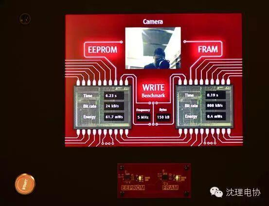
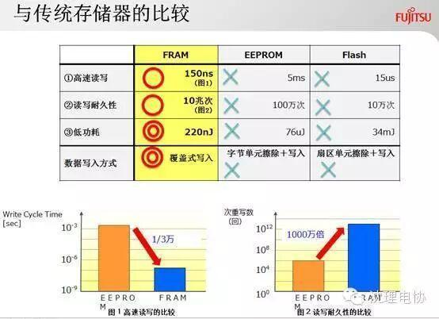
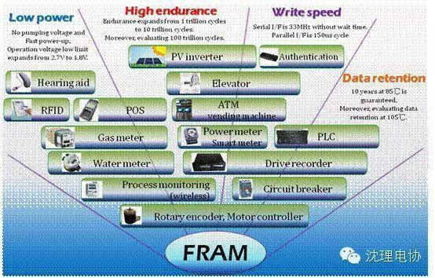
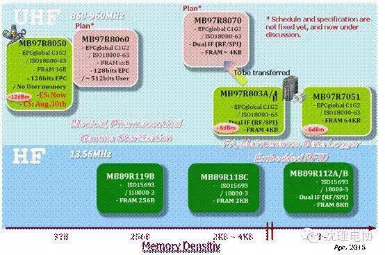
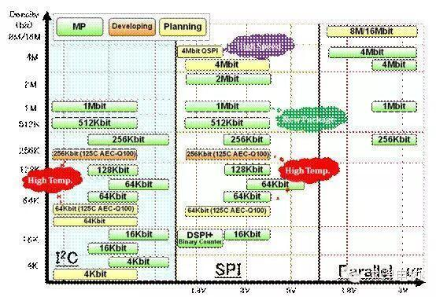

温馨提示：明天就是活动时间了，准备活动没做好的抓紧啦！！
新一代存储技术的进展及其成功应用
近十年来，在高速成长的非易失性存储器(NVM)市场的推动下，业界一直在试图利用新材料和新概念发明一种更好的存储器技术，以替代闪存技术，更有效地缩小存储器，提高存储性能。目前具有突破性的存储技术有铁电RAM(FRAM)、磁性RAM(MRAM)、相变RAM(PRAM)或其他相变技术。本文将分别介绍这些技术的特点、比较和研发进展;最后重点介绍新一代FRAM存储产品的特点、优势和应用案例。
新一代存储技术的进展
MRAM是一种非易失性磁性随机存储器。它拥有静态随机存储器(SRAM)的高速读取写入能力及动态随机存储器(DRAM)的高集成度，基本上可以无限次重复写入。其设计原理非常诱人，它通过控制铁磁体中的电子旋转方向来达到改变读取电流大小的目的，从而使其具备二进制数据存储能力。MRAM的主要缺点是固有的写操作过高和技术节点缩小受限。为了克服这两大制约因素，业界提出了自旋转移矩RAM(SPRAM)解决方案，这项创新技术是利用自旋转换矩引起的电流感应式开关效应。尽管这一创新方法在一定程度上解决了MRAM的一些常见问题，但还有很多挑战等待研究人员克服，如自读扰动、写次数、单元集成等。目前，MRAM只局限于4Mb阵列180nm工艺的产品。另外，MRAM的生产成本也是个不小的问题。MRAM研发可分为三大阵营，除了东芝、海力士之外，三星电子也在进行研发。
PRAM是最好的闪存替代技术之一，能够涵盖不同非易失性存储器应用领域，满足高性能和高密度两种应用要求。它利用温度变化引起硫系合金(Ge2Sb2Te5)相态逆变的特性，利用电流引起的焦耳热效应对单元进行写操作，通过检测非晶相态和多晶相态之间的电阻变化读取存储单元。虽然这项技术最早可追溯到上个世纪70年代，但是直到最近人们才重新尝试将其用于非易失性存储器，采用相变合金的光电存储设备取得了商业成功，也促进了人们发现性能更优异的相变材料结构的研究活动，相变存储器证明其具有达到制造成熟度的能力。从应用角度看，PRAM可用于所有存储器，特别适用于消费电子、计算机、通信三合一电子设备的存储器系统。常用相变材料晶态电阻率和结晶温度低、热稳定性差，需要通过掺杂来改善性能。目前，人们也在寻找性能更加优良的相变材料，以最大限度地发挥PRAM的优越性。
FRAM是早在上个世纪90年代出现的一个概念，是一种随机存取存储器技术，已成为存储器家族中最有发展潜力的新成员之一。它使用一层有铁电性的材料取代原有的介电质，使得它也拥有像E2PROM一样的非易失性内存的优势，在没有电源的情况下可以保存数据，用于数据存储。FRAM具有高速、高密度、低功耗和抗辐射等优点。作为非易失性存储器，FRAM具有接近SRAM和DRAM这些传统易失性存储器的级别的高速写入速度，读写周期只要传统非易失性存储器的数万份之一，但读写耐久性却是后者的1000万倍，达到了10万亿次，可实现高频繁的数据纪录。目前，研发厂商正在解决由阵列尺寸限制带来的FRAM成品率问题，进一步提高存储密度和可靠性。今天，FRAM技术研发的主攻方向是130nm工艺的64Mb存储器。
目前，富士通半导体集团控制着FRAM的整个生产程序;在日本有芯片开发和量产及组装设施。富士通半导体公司可保证FRAM产品的高质量、高可靠性和稳定供应，15年来一直在提供FRAM产品。
富士通半导体FRAM的主要特点和优势
FRAM是一种非易失性存储器，结合了随机存储器(RAM)和只读存储器(ROM)的优势，广泛应用于物联网、医疗电子、消费电子、工业电子等几乎所有行业。富士通半导体的FRAM产品以其“多、快、省”的特点在业界独树一帜，有助于解决应用瓶颈，促进产品创新。“多”是指FRAM的高读写耐久性(10万亿次)的特点，可以频繁记录操作历史和系统状态;“快”是指FRAM的高速烧写(EEPROM的30000倍)的特性，可以帮助系统设计者解决突然断电丢失数据的问题;“省”是指FRAM超低功耗(EEPROM的1/1,000)的特性，特别是写入时无需升压。通过图1的对比，可以发现富士通半导体FRAM相对于EEPROM的的性能优势。

图1：富士通半导体FRAM和EEPROM的性能对比
将照相机实拍的一张照片分别存储到EEPROM和FRAM中，直观比较图像数据写入过程中EEPROM和FRAM的性能差异。在此演示中，使用并口传输数据，FRAM存储数据用了约0.19秒，而EEPROM用了约6.23秒;FRAM存储数据的比特率约为808kB/s，而EEPROM存储数据的比特率约为24kB/s;功耗方面，FRAM约为0.4mW，而EEPROM约为61.7mW。FRAM的快速读写和超低功耗特性显而易见。此外，相比其他传统存储器，FRAM也在性能上更胜一筹，如图2性能比较所示。

图2：FRAM与其他存储器的比较
在通信速度方面，I2C接口速度为1MHz，SPI接口最快可达50MHz。在SPI接口基础上，富士通半导体将推出QSPI接口，通信速率可达到和并口相当的数量级，这将给客户带来很多好处。QSPI只有16到20个引脚，而并口至少40个引脚，并且QSPI可以达到与并口同样的速率，对客户而言意味着能够节省一些功耗和产品成本。采用串行接口的FRAM可以替代EEPROM或串行闪存，而采用并行接口的FRAM产品可以代替低功耗SRAM或PSRAM。在封装方面，目前FRAM基本可以直接替代EEPROM，FRAM的封装和EEPROM的封装完全兼容。
FRAM的主要应用和成功案例
过去几年，富士通FRAM在中国的电力仪表(三相表和集中器)、工业控制、办公设备、汽车音响导航仪器、游戏机、RFID、医疗器械及医疗电子标签等行业取得了可喜成绩。其FRAM主要包括三大类(单体FRAM、RFID和内嵌FRAM的认证芯片)，在很多产业领域实现了批量应用，并促成了大量的创新应用案例。
在流量计应用领域，电池寿命是电池供电的水表/气表的关键所在，电池需要用到10-15年。富士通半导体的低功耗FRAM加上高速读写性能可大大缩短微处理器演算状态，延长其待机状态，进一步延长了电池寿命。中国的一些水表、气表制造商/方案商开始采用FRAM研发新产品，而抄表模块制造商、开发商对FRAM也产生了浓厚兴趣，一些新项目研发已开始采用FRAM。与电力仪表一样，富士通FRAM已成为水表/气表及其集抄系统的最佳选择。在水表/气表系统中，从集中器到每家每户的水表/气表终端，都有FRAM的身影。在集中器中，FRAM用于存储通信历史数据;在气表应用中，FRAM用于存储煤气流量历史数据;在水表应用中，FRAM用于存储水流量历史数据。

图3：FRAM应用图
FRAM也为RFID注入了新的活力，尤其是在传统EEPROM RFID不能满足应用需求的领域，如工厂自动化和维护、医疗、航天等领域，FRAM RFID能够突破一切性能限制，实现EEPROM RFID所不能实现的功能。
在医疗领域，富士通半导体内嵌FRAM的RFID产品相比内嵌EEPROM的RFID产品更具优势。前者读写速度更快，抗辐射性高出不止一个数量级。RAM RFID可用于手术台、药剂盒子、穿刺、血透管子追溯等应用，特别是需要经过伽玛放射性消毒的医疗器械。基于FRAM的RFID可轻松通过标准医疗灭菌过程，而基于EEPROM的RFID信息在这一过程中会被破坏。
EEPROM RFID读写次数最多只有一百万次，这在某些应用场合下使用可能会有问题，例如读卡频率比较高的高速收费，而FRAM RFID的读写次数为1012，可满足这类应用读写次数的要求。
在工厂自动化和维护应用中，制造组装生产线上的历史数据、手册、零件信息等都可以写进FRAM RFID标签，从而缩短读取时间，使生产线更加高效。在某车厂的汽车生产线上就采用了富士通半导体FRAM RFID标签，使其每年的生产量都有提升。
富士通半导体创新的FRAM认证芯片还促进了应用创新，可应用于电子器械与主机(如打印机等)相连的外设(如墨盒)的真假鉴别，通过主机与外设之间的质询-响应进行验证,从而鉴别授权部件或非授权部件。类似创新应用还有很多，如有线内窥镜的转换头真伪验证等。
此外，冷链控制也是FRAM RFID的用武之地，如果要追溯运输途中每一个结点温度的变化，就需要在整个车箱里加一个RFID模块，实时把数据传到接收端，客户读一下就可以看出一小时运输范围内有没有超过温度系数、温度范围，有SPI接口的RFID可以实现这样的应用。

图4：FRAM RFID产品线路图
FRAM的未来发展方向
综上所述：不同存储器都有其各的优势和缺点，而存储器市场需要更高密度、更高速度、更低功耗、具有非易失性且价格便宜的存储器产品，所以由消费类产品驱动的存储器市场在呼唤性能更优存储器技术。
如图3所示，富士通半导体为FRAM存储器制定了产品发展路线图。目前，其FRAM产品线容量为4Kb到4Mb，涵盖SPI和I2C串行接口、并行接口。未来富士通半导体还会不断推出更多新品，逐步实现大容量化，现在已着手研发8Mb、16Mb的产品。
FRAM单体存储器 –产品阵容

图5：富士通半导体FRAM存储器产品线的路线图
由于掌握着从FRAM研发、设计到量产及封装的整个流程，加上多年的经验，富士通半导体能始终保证FRAM产品的高质量和稳定供应。为了更好地在技术上支持广大工程师的系统设计，富士通半导体还提供FRAM RFID开发板，帮助工程师更好地了解FRAM RFID的性能及应用，缩短产品上市时间。

信息黄治勇